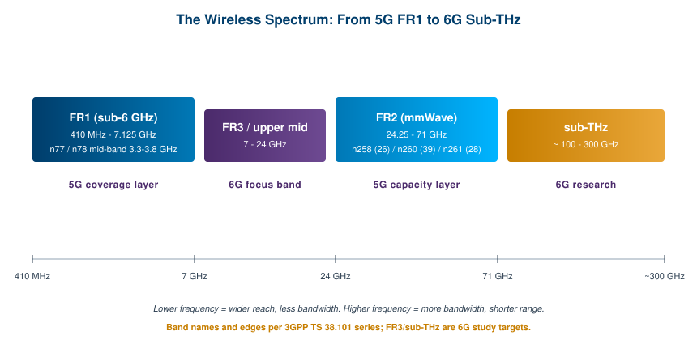
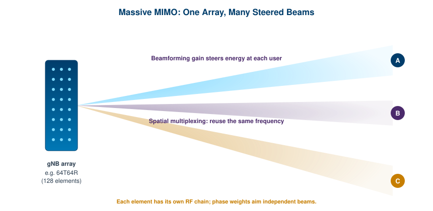
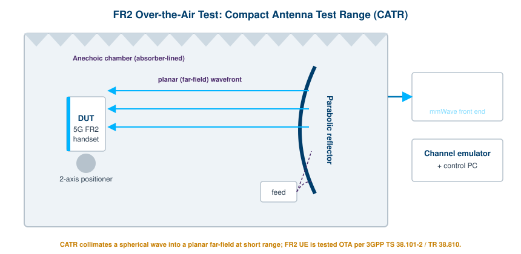

Every chapter before this one has built up the toolkit: how RF signals are generated and measured, how analyzers and network analyzers work, how transmitters and receivers are characterized, and how a product proves it will not interfere with its neighbors. This chapter puts that toolkit to work on the systems pushing the field forward. Modern cellular is where the hardest RF problems now live, because it combines very wide bandwidths, very high frequencies, and antennas that no longer behave like a single connector you can probe.
The shift from 4G LTE to 5G New Radio (5G NR) was not just faster data. It was a change in how radios use space and spectrum. Beams replaced broad coverage, arrays replaced single antennas, and millimeter waves opened spectrum that used to be the domain of radar and point-to-point links. The result is a generation of devices that cannot be fully tested through a cable, which forces new measurement methods. This chapter walks through that landscape: the new spectrum, the millimeter-wave bands, the antenna systems that make them usable, the over-the-air testing they demand, the research now aimed at 6G, and the spectrum-sharing schemes that keep all of it from colliding.
5G NR is the radio access technology standardized by 3GPP, the body that writes the global cellular specifications. Where earlier generations were defined largely by a fixed set of channel bandwidths and modulation schemes, 5G NR was built to be flexible. It scales across a huge range of frequencies, channel widths, and use cases, from low-power sensors to fixed wireless access that competes with home broadband.
The most important structural idea is the split of the usable spectrum into two ranges. Frequency Range 1 (FR1) covers the sub-6 GHz bands, and the specification has extended it to span roughly 410 MHz to 7.125 GHz. [1] Frequency Range 2 (FR2) covers the millimeter-wave bands, from 24.25 GHz up to 71.0 GHz. [1] These two ranges behave so differently that they are almost separate technologies sharing a common protocol stack. FR1 gives reach and reliability. FR2 gives raw capacity.
Within FR1, the mid-band became the workhorse of 5G. Band n77 spans 3.3 to 4.2 GHz, and band n78, a subset of n77 covering 3.3 to 3.8 GHz, emerged as the primary mid-band choice for most operators worldwide. [2] Mid-band hits a useful balance: it carries far more data than the low bands that handle coverage, and it travels far enough to be practical for wide-area deployment, unlike millimeter wave. When people talk about the "5G layer cake," mid-band is the middle layer that does most of the heavy lifting.
3GPP defines every operating band, channel arrangement, and conformance requirement in its technical specifications. The FR1 bands live in TS 38.101-1 and the FR2 bands in TS 38.101-2. [1] These documents are the authoritative source for band edges, channel bandwidths, and the radio requirements a device must meet. For an engineer building or testing 5G hardware, the band number alone tells you the duplex mode, the frequency range, and the bandwidths you have to support.

Flexibility shows up in the numerology as well. 5G NR supports multiple subcarrier spacings, which lets the same waveform serve a slow, robust link in a rural cell and a wide, low-latency channel in a dense urban small cell. Wider channels, up to 100 MHz in FR1 and up to 400 MHz per carrier in FR2, are a big part of why 5G can deliver the throughput it does. The penalty is that wide channels and high frequencies are harder to generate cleanly and harder to measure accurately, which is exactly where good test instrumentation earns its keep.
Millimeter wave is the part of 5G that captures the headlines and frustrates the engineers. The physics is simple to state and hard to live with. At 28 GHz or 39 GHz, a wavelength is on the order of a centimeter, which makes very small, very directive antennas possible. The same short wavelength means the signal is absorbed and blocked easily. Rain, foliage, glass, and even a human hand can take a usable link down to nothing.
The FR2 range is itself split. FR2-1 covers 24.25 GHz to 52.6 GHz, and FR2-2 extends from 52.6 GHz to 71 GHz. [3] The commercially important bands today sit in the lower part of that span: n258 around 26 GHz, n261 around 28 GHz, and n260 around 39 GHz, the last covering 37.0 to 40.0 GHz and supporting channel bandwidths up to 400 MHz. [2] These bands trade range for bandwidth in the most extreme way the standard allows. A single millimeter-wave cell might cover a city block, a stadium concourse, or a transit platform rather than a neighborhood.
Path loss is the central problem. Free-space loss rises with frequency, so a 39 GHz signal starts at a disadvantage against a 3.7 GHz one before any obstacle is considered. The answer is to stop spraying energy in all directions and instead concentrate it into a beam aimed at the user. That makes beamforming not a nice-to-have for FR2 but a requirement: analog beamforming is considered mandatory for the millimeter-wave frequency range of 5G NR, because it is the only practical way to overcome the path loss. [4] The directivity that beamforming provides is what turns a marginal millimeter-wave link into a working one.
This is why FR2 deployment has been selective. Operators put millimeter wave where the demand is dense and the geometry cooperates: venues, downtown cores, fixed wireless to specific buildings. It complements mid-band rather than replacing it. The mental model worth keeping is a hierarchy. Low band reaches everywhere, mid-band carries the bulk of traffic, and millimeter wave drops enormous capacity into the few places that need it most.
Multiple-input multiple-output (MIMO) is not new. LTE used it to send several data streams over the same channel by exploiting the spatial paths between transmit and receive antennas. What changed with 5G is scale. Massive MIMO base stations deploy arrays with dozens or even hundreds of small antenna elements. A common configuration is 64T64R, meaning 64 transmit and 64 receive elements, which together amount to 128 antenna elements in one panel. [5]
The large element count is what makes effective beamforming possible. Each element has its own RF chain and power amplifier, so instead of one high-power transmitter feeding one antenna, dozens of medium-power transmitters work coherently. [5] By adjusting the phase and amplitude fed to each element, the array shapes the combined wavefront and steers it. Energy that used to wash over a whole sector is now aimed at individual users, which raises the signal at the user and lowers the interference everywhere else.

Two distinct benefits come out of the same hardware. The first is beamforming gain, the extra signal strength from concentrating energy. The second is spatial multiplexing, sometimes called multi-user MIMO, where the array forms several beams at once and serves different users on the same time and frequency resource because they sit in different directions. The first benefit extends range. The second multiplies capacity. Together they are the main reason 5G mid-band delivers so much more than LTE on the same spectrum.
The field results are concrete. Operators have reported that massive MIMO let them cover the same area with far fewer cells than an older single-antenna deployment on the same band, driven by the added beamforming gain extending the effective cell radius. [6] The catch is complexity. Calibrating an array, characterizing its beams, and verifying it meets the radiated requirements is far harder than measuring a single port, which leads directly to the next section.
There is also a structural difference worth naming. In a conventional radio you can put a connector on the antenna port and measure conducted power. A massive MIMO array, and a millimeter-wave handset, often has the antenna integrated into the package with no accessible RF connector at all. The antenna array and the radio are co-designed as one unit. When the connector disappears, conducted measurement disappears with it, and the only way to characterize the device is to measure the fields it radiates.
Over-the-air testing means measuring a device through its antenna, in space, rather than through a cable at an RF port. For most of this book the conducted approach has been the norm: connect the instrument to the device and read the result. For FR2 devices that approach is not optional to abandon, it is impossible to use, because the antennas are dynamic beam-steering arrays with no exposed port. UEs supporting FR2 must be tested OTA, as specified in 3GPP TS 38.101-2. [7]
The reference environment is the anechoic chamber introduced in the EMC chapter, lined with absorber to eliminate reflections so the only signal the instrument sees is the direct path between the test antenna and the device. The hard part is creating a true far-field condition. A clean measurement of antenna pattern, beam shape, or radiated power needs the device to sit in a planar wavefront, and at millimeter-wave frequencies the natural far-field distance for a real chamber can be impractically long.
3GPP TR 38.810, the study on test methods for FR2 devices, defines two main OTA approaches to solve this. [7] The direct far field (DFF) method simply places the device far enough away that the wavefront is acceptably planar, which works well when the device antenna is small and its location is known. The compact antenna test range (CATR) method uses a shaped parabolic reflector to perform a near-field-to-far-field transformation: the reflector collimates the spherical wave from a feed antenna into a planar wave at a short distance, so a small chamber can produce far-field conditions. [8]

The choice between the two is an engineering and economic tradeoff. CATR chambers can cost up to ten times more than DFF chambers, because of the precision reflector and its alignment. [8] For devices with small antenna arrays in known locations, DFF can deliver equivalent or lower path loss at a fraction of the capital cost. [8] For larger devices, or when the antenna location is uncertain, the CATR is often the only practical option. Either way, OTA test is slower and more involved than connecting a cable, and it requires a positioner that can rotate the device through a sphere of angles to map its full radiation pattern.
OTA testing covers more than antenna patterns. The same chambers measure effective isotropic radiated power (EIRP), the strength of the strongest beam, and total radiated power across all directions, along with receiver sensitivity figures and the beam management behavior that lets a handset and a base station find and track each other. Reverberation chambers, which deliberately stir reflections to create a statistically uniform field, serve a complementary role for total-radiated-power and throughput measurements where the exact pattern matters less. The common thread is that the antenna is now part of the device under test, and the measurement has to treat it that way.
5G is mature and deploying. 6G is in the research and early standardization phase, and the timeline is now concrete enough to plan around. The 6G technical study at 3GPP began in the third quarter of 2025 and runs in parallel with continued 5G-Advanced work during Release 20. [9] The detailed, implementable specifications are expected in Release 21, which will be the first release to define 6G technologies and therefore the first official 6G standard. [9] In June 2026 at the latest, 3GPP is expected to decide the duration of the Release 21 work and, with it, the date the first 6G specifications become available. [9] None of this is a product yet, but it tells engineers and test labs what to prepare for.
The research themes are clearer than the final specifications. One major thread is new spectrum in the upper mid-band, the range from roughly 7 GHz to 24 GHz now widely called FR3. [10] FR3 is attractive because it tries to keep the reach of sub-6 GHz while adding bandwidth closer to millimeter wave, a middle ground that may carry much of the early 6G capacity. At the far end, sub-terahertz bands above 100 GHz are under study for the extreme bandwidths that some 6G visions promise, though the propagation and hardware challenges there are severe.
A second thread is integrated sensing and communication (ISAC), the idea that the same radio signals used to carry data can also sense the environment, detecting people, vehicles, drones, and objects the way a radar does. ISAC is being developed as a key technology for 6G, with sensing strategies expected to combine low, mid, and high bands and to pair RF with non-RF sensors such as cameras. [10] The first ETSI report on ISAC use cases, published in April 2025, covers indoor, outdoor, and mixed environments for people, vehicles, drones, and robots. [11] A network that communicates and senses at once changes what a base station is for.
Other themes round out the picture. Reconfigurable intelligent surfaces, panels of passive elements that steer reflections to fill coverage gaps, are under active study. Artificial intelligence is being woven into the air interface itself rather than bolted on for network management. Non-terrestrial networks, meaning satellites integrated directly into the cellular standard, aim to extend coverage to places no tower reaches. For the test community, every one of these raises measurement questions, especially at FR3 and sub-THz frequencies where instrumentation is still maturing.
Spectrum is finite, and the demand for it is not. Every new band fought over by mobile operators is a band someone else, often a government incumbent, already uses. The modern answer is to stop assigning spectrum exclusively and instead let multiple users share it under rules that prevent interference. Dynamic spectrum sharing lets different services occupy the same frequencies at different times or places, coordinated by software rather than by a fixed license map.
The clearest production example in the United States is the Citizens Broadband Radio Service (CBRS), a 150 MHz band from 3550 to 3700 MHz. [12] The FCC opened this federal spectrum to commercial use under a three-tiered access model managed by a Spectrum Access System (SAS), a cloud service that arbitrates who may transmit where and at what power. [12] The top tier is incumbent access, primarily naval radar and fixed satellite earth stations, which always have priority. The middle tier is Priority Access Licenses, sold by auction, with guaranteed protection from the tier below. The bottom tier is General Authorized Access, open to anyone with compliant equipment on a use-it-if-it-is-free basis.
The SAS makes this work in close to real time. When an incumbent such as a shipboard radar appears, the SAS reacts to ensure there is no interference by inhibiting nearby devices on that channel and dynamically reallocating the lower-tier users to other parts of the band. [13] The FCC authorized full commercial deployment of CBRS in early 2020, and the band has since become a practical option for private networks: factories, ports, campuses, and stadiums that want their own LTE or 5G without buying licensed spectrum. [12] The model matters beyond CBRS, because it shows that automated coordination can let incumbents and newcomers share the same megahertz safely.
A related technique sits inside the cellular networks themselves. Dynamic spectrum sharing, in the operator sense, lets a carrier run 4G LTE and 5G NR in the same band at the same time, with the scheduler allocating resources between them moment to moment as demand shifts. That let operators launch 5G on existing low-band spectrum without clearing the LTE users off it first, which smoothed the early rollout considerably.
Coexistence is the broader discipline behind all of this, and it ties straight back to the EMC chapter. Whether the concern is two cellular standards in one band, an unlicensed device near a licensed one, or a commercial network protecting a military radar, the engineering question is the same: how do you keep one system's emissions from degrading another's reception. As 6G adds more bands, more sharing, and sensing signals that deliberately illuminate the environment, coexistence testing will only grow in importance. The instruments and methods from earlier chapters, spectrum analysis, signal generation, and careful emissions measurement, are exactly what that work depends on.
Going Deeper - Why beamforming complicates the simplest measurement
In a classic radio the transmit power is a single number you read at a port. In a beamforming array it is not. The radiated power depends on the direction you look, because the array concentrates energy in the beam and suppresses it elsewhere. That is why FR2 specifications are written in terms of EIRP, the power in the strongest beam direction, and total radiated power, the integral over all directions. Neither can be read from a connector. Both require a positioner that sweeps the device through angles while the instrument records the field, which is the core reason OTA test exists.
BNC in Practice - Instruments for the modern wireless bench
Characterizing 5G FR1, FR2, and the research bands beyond depends on the same instrument categories this book has covered throughout: wideband signal generation to create clean test stimulus, signal and spectrum analysis to measure modulation quality and spurious content, and stable references to discipline it all. Berkeley Nucleonics builds RF and microwave signal generators and analysis instruments used in this kind of work. Match the instrument frequency range and modulation bandwidth to the band you test, FR1 mid-band, FR2 millimeter wave, or the emerging FR3 upper mid-band, and verify the specifics against the current datasheet before you commit.
Take it interactively. The quiz lives on its own page with hidden answers - write your attempt first (even four characters works), then reveal. Self-graded. About 10 minutes.
Or read the questions and answers inline below (preserved for print and offline use).
[1] 3GPP TS 38.101-1 (FR1, 410 MHz - 7.125 GHz) and TS 38.101-2 (FR2, 24.25 - 71.0 GHz) define the 5G NR operating bands and radio requirements. Verify before publication.
[2] 5G NR mid-band n77 (3.3-4.2 GHz) and n78 (3.3-3.8 GHz, a subset of n77); FR2 bands n258 (~26 GHz), n261 (~28 GHz), and n260 (37.0-40.0 GHz, up to 400 MHz bandwidth). Verify before publication.
[3] FR2 sub-ranges FR2-1 (24.25-52.6 GHz) and FR2-2 (52.6-71 GHz). Verify before publication.
[4] Analog beamforming is treated as mandatory for the FR2 millimeter-wave range of 5G NR to overcome path loss. Verify before publication.
[5] Massive MIMO arrays such as 64T64R (64 transmit, 64 receive, 128 elements total), each element with its own RF chain and power amplifier. Verify before publication.
[6] Operator field reports of reduced cell counts from massive MIMO beamforming gain extending effective cell radius on mid-band spectrum. Verify before publication.
[7] 3GPP TS 38.101-2 requires OTA testing of FR2 UEs; 3GPP TR 38.810, Study on Test Methods for FR2 (mmWave) devices, defines DFF and CATR methods. Verify before publication.
[8] Compact antenna test range (CATR) uses a shaped reflector for near-field-to-far-field transformation; comparative cost and path-loss tradeoffs between CATR and DFF. Verify before publication.
[9] 3GPP 6G technical study began Q3 2025 alongside Release 20 5G-Advanced work; Release 21 expected to carry the first 6G specifications; Release 21 duration decision expected by June 2026. Verify before publication.
[10] FR3 upper mid-band (7-24 GHz) and sub-THz bands as 6G spectrum candidates; integrated sensing and communication (ISAC) as a key 6G technology. Verify before publication.
[11] First ETSI report on ISAC use cases published April 2025, covering indoor, outdoor, and mixed environments for people, vehicles, drones, and robots. Verify before publication.
[12] CBRS band 3550-3700 MHz (150 MHz), three-tier access managed by a Spectrum Access System; FCC authorized full commercial deployment in early 2020. Verify before publication.
[13] The SAS dynamically inhibits and reallocates lower-tier CBRS users to protect incumbent radar operations. Verify before publication.